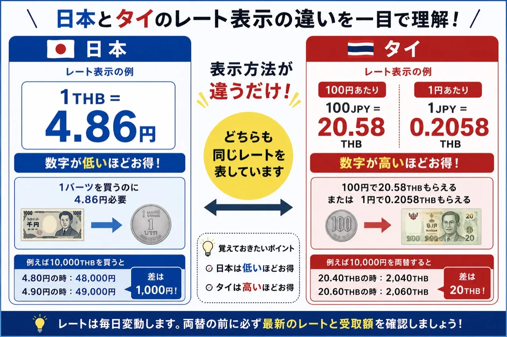
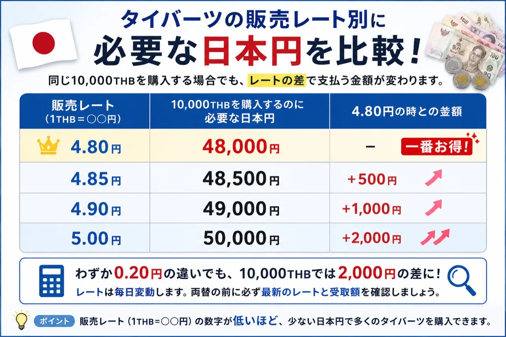
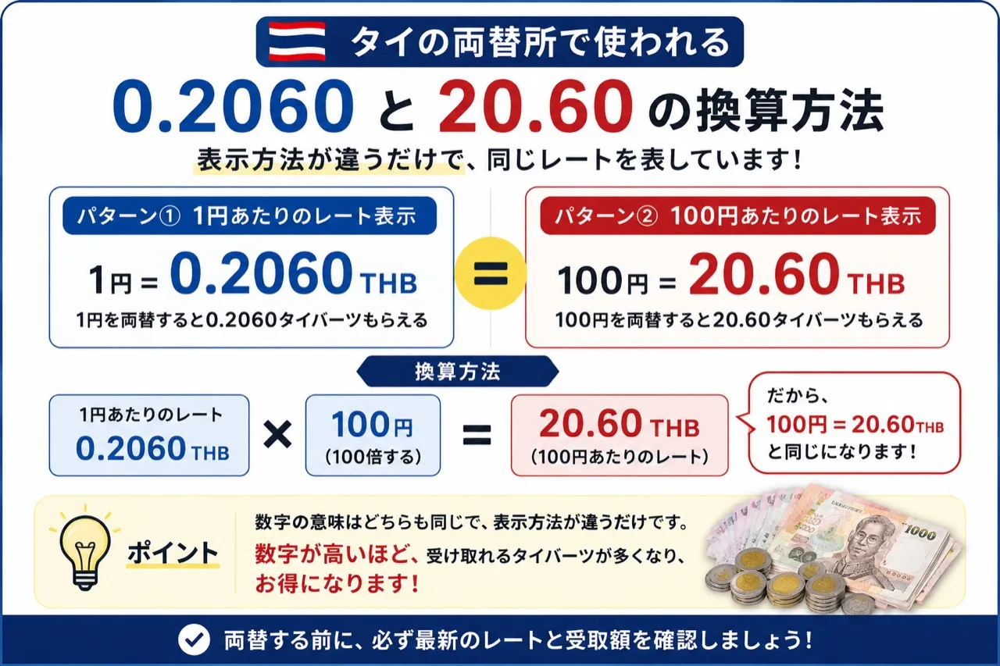
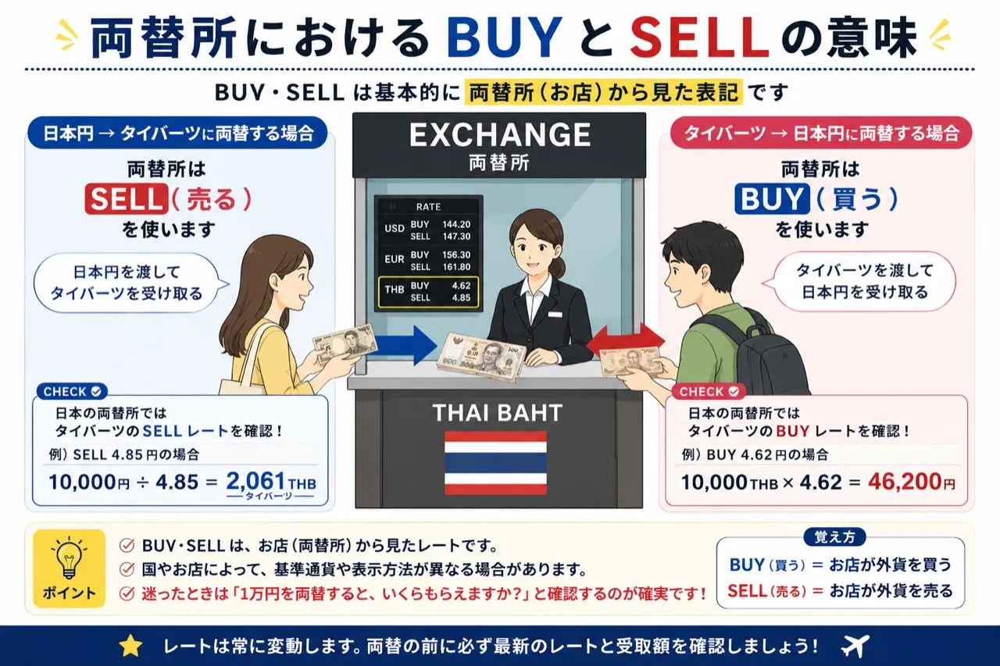
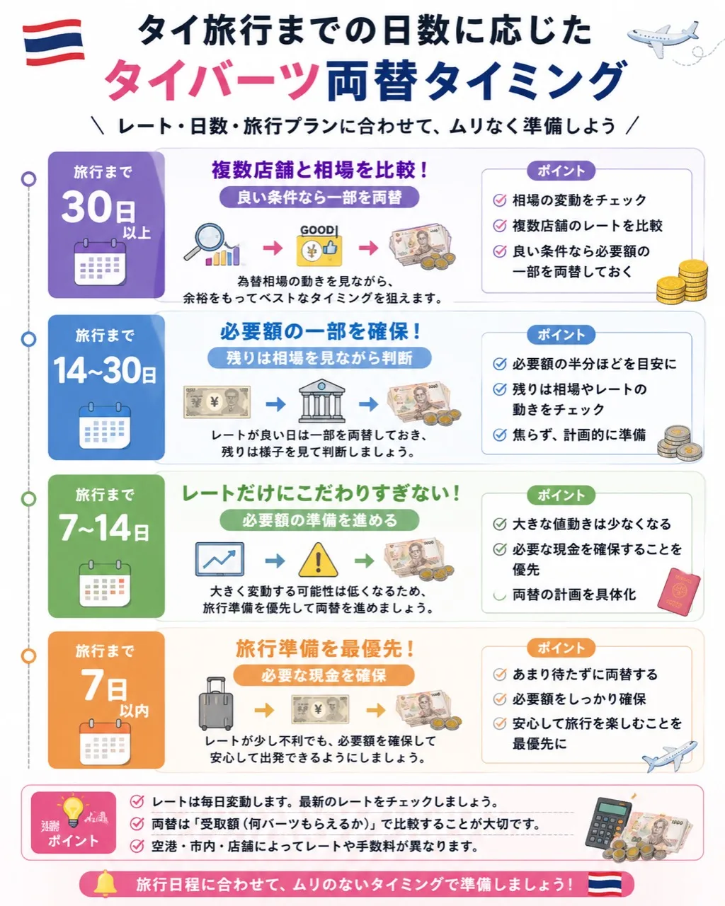

タイバーツの両替で、最初につまずくポイント
「1タイバーツ4.86円って高いの？」「タイの両替所にある0.2060って何？」「BUYとSELLはどっちを見るの？」
初めてタイ旅行へ行く方ほど、両替所のレートボードを見て戸惑いやすいものです。実は、日本とタイでは表示方法が違うだけで、同じ交換条件を別の角度から表していることがあります。
この記事では、2026年時点の旅行者向け目安として、タイバーツのレート表示、BUY・SELL、両替タイミングを初心者にも分かりやすく整理します。固定の「買い時」を断定するのではなく、旅行日程に合わせて損を減らす考え方を紹介します。
この記事の結論
まず覚えるのは、この3つだけ
- 日本の「1THB＝○円」は、数字が低いほど少ない日本円で買える
- タイ現地の「100円＝○THB」「1円＝○THB」は、数字が高いほど多くのバーツを受け取れる
- BUY・SELLで迷ったら「1万円で何バーツ受け取れますか？」と確認する

レートは毎日変動します。旅行者にとって大切なのは、ニュースで見る市場レートだけで判断せず、実際に支払う日本円と受け取れるタイバーツを確認することです。
タイバーツのレートとは？
両替レートとは、日本円とタイバーツを交換するときの比率です。たとえば「1THB＝4.86円」と表示されている場合、1タイバーツを買うために4.86円が必要という意味になります。
一方、タイ現地では「1円＝0.2058THB」「100円＝20.58THB」のように、日本円を渡したときに何バーツ受け取れるかで表示されることがあります。
Googleなどに表示される為替レートは、市場の基準となるレートです。現金の両替では、店舗の運営費、為替変動リスク、紙幣管理費、店舗の利益、手数料などが反映されるため、市場レートと同じ条件で両替できるとは限りません。
日本で見るレートの見方
日本の銀行や両替所でタイバーツを購入する場合、よく見るのは「1THB＝○円」という表示です。この場合は、数字が低いほど有利です。
たとえば、10,000THBを購入する場合の必要額は次のようになります。
| 販売レート | 10,000THBを買うのに必要な日本円 | 4.80円との差 |
|---|---|---|
| 1THB＝4.80円 | 48,000円 | 基準 |
| 1THB＝4.85円 | 48,500円 | +500円 |
| 1THB＝4.90円 | 49,000円 | +1,000円 |
| 1THB＝5.00円 | 50,000円 | +2,000円 |

20,000THBを購入する場合は、上記の差額がおおむね2倍になります。少額なら差は小さく見えますが、家族旅行や長期滞在では受取額の確認が大切です。
タイバーツはいくらなら「買い」？
「いくらなら買いですか？」という疑問は自然ですが、固定の数字で判断するのはおすすめできません。為替相場は日々変動し、両替所ごとの手数料や在庫、旅行までの日数でも判断が変わります。
旅行まで時間があるなら、複数店舗のレートを比較し、良い条件のときに必要額の一部だけ両替する方法があります。出発が近いなら、多少の値動きよりも、到着後に使う現金を確実に用意することを優先しましょう。
レートだけで判断してはいけない理由
両替で大切なのは、レートの数字そのものではなく、最終的にいくら支払い、何バーツ受け取れるかです。
「手数料無料」と表示されていても、手数料相当分がレートに含まれている場合があります。比較するときは、「1万円を両替した場合、手数料を含めて何バーツ受け取れますか？」と確認するのが確実です。
タイ旅行の現金目安は、タイ旅行で現金はいくら必要？の記事でも日数別に整理しています。
タイ現地のレートの見方
タイ現地では、日本円からタイバーツへ両替するときに「100円＝20.58THB」「1円＝0.2058THB」のように表示されることがあります。
この場合は、数字が高いほど有利です。同じ1万円を出したときに、より多くのタイバーツを受け取れるためです。
| レート | 1万円を両替した場合の受取額 |
|---|---|
| 1円＝0.2020THB | 2,020THB |
| 1円＝0.2060THB | 2,060THB |
| 1円＝0.2080THB | 2,080THB |
つまり、タイ現地の日本円表示では「高いほどお得」と覚えると分かりやすいです。
「20.60」と「0.2060」の違い
タイの両替所では、「20.60」と「0.2060」のような表示を見かけることがあります。これは基準にしている日本円の単位が違うだけです。
計算式
1円＝0.2060THB
0.2060 × 100 ＝ 20.60THB
つまり、100円＝20.60THBです。

BUY・SELLとは？
BUY・SELLは、基本的に両替所側から見た表記です。
- BUY：両替所がお客様から外貨を買う
- SELL：両替所がお客様へ外貨を売る
日本の両替所で、日本円からタイバーツへ両替する場合は、一般的にタイバーツのSELLレートを確認します。ただし、タイ現地では日本円のBUYレートを見る形式になることもあります。

表記に迷った場合は、「1万円で何バーツ受け取れますか？」と聞くのがいちばん確実です。
日本とタイ、どちらで両替した方がお得？
一般的には、タイ市内の専門両替所の方が良い条件になることがあります。ただし、必ずタイ現地の方がお得とは限りません。為替相場、店舗の手数料、空港・市内などの場所によって条件は変わります。
安心とレートのバランスを重視するなら、日本で到着後すぐに必要な金額だけを用意し、残りはタイ現地で複数店舗を比較する方法が現実的です。
具体的な両替方法は、タイ旅行の両替は日本と現地どっちがお得？とタイでおすすめの両替所5選でも解説しています。
空港と街中ではどれくらい違う？
空港内の両替所は、市内の両替所よりレートが不利になる場合があります。一方で、到着直後に現金を確保できるため、利便性は高いです。
空港では交通費や飲食費など初日に必要な金額だけを両替し、残りを市内で両替する方法もあります。空港内でも店舗やフロアによってレートが異なることがあるため、可能であれば複数のレートボードを確認しましょう。
現金が足りない場合のATM利用は、タイ旅行のATM手数料を無料にする方法も参考になります。
レート換算早見表
ざっくり費用感をつかむための目安です。実際の両替では、利用予定の店舗で最新レートと受取額を確認してください。
| 日本での表示 | 10,000THB購入時 | タイ現地での近い表示例 |
|---|---|---|
| 1THB＝4.80円 | 48,000円 | 1円＝約0.2083THB |
| 1THB＝4.86円 | 48,600円 | 1円＝約0.2058THB |
| 1THB＝4.90円 | 49,000円 | 1円＝約0.2041THB |
| 1THB＝5.00円 | 50,000円 | 1円＝約0.2000THB |
旅行者向け「買い時」の目安
タイバーツの買い時は、旅行までの日数によって考え方を変えると迷いにくくなります。

- 30日以上前：複数店舗と相場を比較し、良い条件なら一部を両替
- 14〜30日前：必要額の一部を確保し、残りは相場を見ながら判断
- 7〜14日前：レートだけにこだわりすぎず、必要額の準備を進める
- 7日以内：旅行準備を優先して、必要な現金を確保する
タイ旅行で両替に失敗しないポイント
- レートは毎日変動するため、両替前に最新情報を確認する
- 「手数料無料」だけで判断せず、最終受取額で比較する
- 空港では初日に必要な分だけにして、市内で追加両替する選択肢を持つ
- 破れ・汚れ・落書きのある日本円は避ける
- 両替後は、カウンターを離れる前に金額を確認する
クレジットカードも使う予定がある方は、タイ旅行でクレジットカードは使える？でDCCや現金との使い分けも確認しておくと安心です。
タイバーツのレートに関するよくある質問
Q1. タイバーツは、いくらなら買いですか？
日本の両替所でタイバーツを購入する場合、表示される販売レートは数字が低いほど有利です。ただし、「何円なら必ず買い」と固定することはできません。為替相場や両替所の手数料、旅行までの日数によって判断が変わるためです。
旅行日まで余裕がある場合は複数店舗のレートを比較し、旅行が近い場合は、多少の値動きよりも必要額を確保することを優先しましょう。
Q2. 1タイバーツ4.86円は高いですか？
4.86円は、極端に高いとも安いとも言い切れない水準です。旅行まで日数がある場合は相場を少し様子見る選択肢もありますが、出発が近い場合は、必要額の一部または全部を購入してもよいでしょう。
大切なのは、レートの数字だけでなく、手数料を含めた支払総額と、実際に受け取れるタイバーツを確認することです。
Q3. タイの両替所に表示される「0.2060」とは何ですか？
「0.2060」は、1円で0.2060タイバーツ受け取れるという意味です。100円を両替する場合は、0.2060 × 100 ＝ 20.60THBとなります。つまり、「0.2060」と「100円＝20.60THB」は同じ交換条件を表しています。
Q4. タイ現地では、数字が高い方がお得ですか？
はい。タイ現地で「1円＝0.2060THB」や「100円＝20.60THB」と表示されている場合、数字が高いほど、同じ日本円で多くのタイバーツを受け取れます。
| レート | 1万円の受取額 |
|---|---|
| 0.2020 | 2,020THB |
| 0.2060 | 2,060THB |
| 0.2080 | 2,080THB |
Q5. BUYとSELLはどちらを見ればいいですか？
BUY・SELLは、基本的に両替所側から見た表記です。BUYは両替所がお客様から外貨を買う、SELLは両替所がお客様へ外貨を売るという意味です。
日本の両替所で、日本円からタイバーツへ両替する場合は、一般的にタイバーツのSELLレートを確認します。ただし、タイ現地では日本円のBUYレートを見る形式になることもあります。表記に迷った場合は、「1万円で何バーツ受け取れますか？」と確認するのが確実です。
Q6. 日本とタイでは、どちらで両替する方がお得ですか？
一般的には、タイ市内の専門両替所の方が、良い条件になることがあります。ただし、必ずタイ現地の方がお得とは限りません。為替相場、店舗の手数料、空港・市内などの場所によって条件は変わります。
安心とレートのバランスを重視するなら、日本で到着後すぐに必要な金額を用意し、残りはタイ現地で複数店舗を比較する方法が現実的です。
Q7. タイの空港で両替すると損ですか？
空港内の両替所は、市内の両替所よりレートが不利になる場合があります。一方で、到着直後に現金を確保できるため、利便性は高いです。
空港では、交通費や飲食費など初日に必要な金額だけを両替し、残りを市内で両替する方法もあります。ただし、空港内でも店舗やフロアによってレートが異なることがあるため、可能であれば複数のレートボードを確認しましょう。
Q8. Googleに表示される為替レートと、両替所のレートが違うのはなぜですか？
Googleなどに表示される為替レートは、一般的に市場の基準となるレートです。実際の両替所では、店舗運営費、為替変動リスク、紙幣の仕入れや管理費、店舗の利益、手数料などが反映されます。
そのため、市場レートと同じ条件で現金を両替できるわけではありません。比較する際は、Googleのレートだけではなく、実際の支払額と受取額を確認してください。
Q9. 手数料無料なら、その両替所が一番お得ですか？
必ずしもそうではありません。「手数料無料」と表示されていても、手数料相当分がレートに含まれている場合があります。
重要なのは、手数料の有無ではなく、同じ日本円を支払ったときに最終的に何バーツ受け取れるかです。店舗を比較する際は、「1万円を両替した場合、手数料を含めて何バーツ受け取れますか？」と確認しましょう。
Q10. タイバーツは一度に全部両替した方がいいですか？
必ずしも一度に全額を両替する必要はありません。為替変動が不安な場合は、複数回に分けて両替する方法があります。
たとえば、旅行まで時間がある場合は、先に必要額の半分を両替し、残りは出発前または現地で両替する方法です。分散することで、最も良いレートを逃す可能性はありますが、最も悪いタイミングで全額を両替するリスクも抑えられます。
Q11. 日本で最低限いくら両替しておけば安心ですか？
到着時間や旅行プランによって異なりますが、空港から市内までの交通費、食事代、通信費など、到着初日に必要な現金を用意しておくと安心です。
深夜・早朝に到着する場合や、空港から地方へ移動する場合は、両替所の営業時間や移動手段も確認しておきましょう。
Q12. 余ったタイバーツは日本円へ戻せますか？
日本やタイの両替所で日本円へ戻せます。ただし、日本円からタイバーツへ両替したときと同じレートでは戻せません。再両替では別のレートが適用されるため、往復で両替すると差額が発生します。
余分に両替しすぎないことも、両替で損を減らすポイントです。
まとめ
タイバーツのレートは、日本とタイで表示方法が違うため、初めて見ると分かりにくく感じます。日本では「1THB＝○円」が低いほど有利、タイ現地では「1円＝○THB」「100円＝○THB」が高いほど有利です。
BUY・SELLはお店目線の表記なので、迷ったときは「1万円で何バーツ受け取れますか？」と確認しましょう。両替で見るべきなのは、手数料の有無だけではなく、最終的な支払額と受取額です。
旅行前には、到着初日に必要な現金を確保し、残りは旅行日程や現地のレートを見ながら判断すると安心です。
タイ旅行のお金に関する不安を、出発前に解消しよう
タイ旅行では、両替する場所やタイミングによって受け取れる金額が変わります。ただし、数円・数十円の差だけを追い続けるよりも、旅行日程に合わせて必要な現金を確実に準備することが重要です。
DIVERRAでは、タイ旅行のお金や支払いに関する情報を、旅行初心者にも分かりやすく解説しています。
あわせて読みたい
- タイ旅行では現金をいくら持っていくべき？
- 日本とタイ現地、両替するならどちらがお得？
- タイのATM手数料と海外キャッシングの注意点
- タイでクレジットカードはどこまで使える？
- タイの支払い方法とDCCの注意点
両替レートは日々変動します。実際に両替する際は、利用予定の店舗で最新レート、手数料、受取額を確認してください。
タイ旅行ガイドを見る